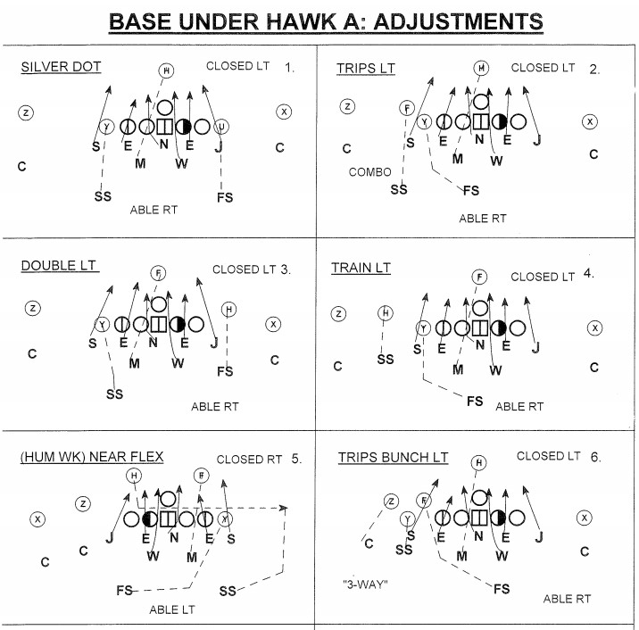

American Football is the superior Sport for many reasons. In fact, so many I will choose just a few to talk about. The first reason it is the better sport is due to its intensity. It's 60 minutes of guys trying to take each other's heads off (figuratively) and win the game for their team. Football players will leave blood on the field and be happy about it while soccer players will pretend like they tore their acl after the wind picks up. Football players will take hard hits all game and walk away like it's nothing. The games are just more action packed than soccer games.

The next thing that makes it better is the exciting high scores. You can spend 90 minutes watching guys run up and down a field and the game ends 1-0 or even 0-0. Meanwhile you could spend 60 minutes watching an action packed, high flying, exhilarating sport that has games end with scores in the 20s-40s range. Nothing is better than seeing your favorite team drop 45 points on a team. It's an awesome feeling seeing your offense and defense dominate.
The last thing I will talk about is how tactical football actually is. Football Players on both sides of the ball need to remember hundreds of different plays. They spend hours every day learning the playbook in the offseason. They also have to continue studying it during the season as coaches are constantly changing their plays. Not to mention remembering how fakes and trick plays work the average NFL player needs to have a great memory and a fast memory. They need to remember how these plays are designed when they are said by the coach during the game. Not to mention the split second decisions a player has to make during the play. Where the man your guarding is gonna go, where the qb is throwing too, which receiver the qb should throw too, and so many, many more. The thought process and planning at every position from head coach to kicker is concise and seriously thought out. This is these guys careers and their passion and they are dead serious about being the best they can.
